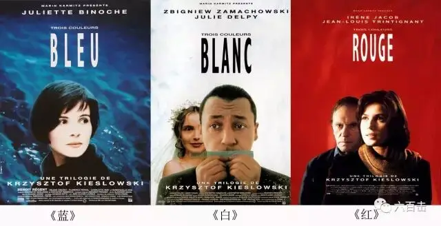
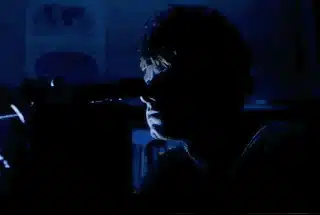

波兰独特的地理位置构成了她暧昧模糊的政治身份，面对国际上极权与民主两种力量的争斗往往身不由己，这片土地上的人们也经历着前所未有的波折与动荡。
国家不幸诗家幸，独特的政治背景构成艺术家独特的人生体验，而这种体验最终又凝结为一种展现人类普遍生存状态的艺术作品。与昆德拉相似，政治与艺术缠绕着同样来自东欧的基耶斯洛夫斯基。

基氏声明自己的电影不关心政治，我以为大可不必。
事实上政治本身就是一种生存性事实。如果电影要表现的是人的生存状态，那就没有必要去回避政治。
法学家施密特也认为作出敌我划分的政治决断是生存性意义上的。既然政治是生存性事实，以一种知识分子式的清高回避“肮脏”的政治就显得有些做作了。
基耶斯洛夫斯基谈到电影《红色》提出的根本问题是人、时间、地点的错位。

基氏的电影被称作“道德焦虑电影”，基氏恰巧生活在社会主义波兰，这一事实本身就构成了基氏的问题。
社会主义波兰以不容置疑的绝对道德目标为基础，基耶斯洛夫斯基怎么可以拍道德焦虑电影？
道德焦虑击中的不正是社会主义波兰的阿喀琉斯之踵吗？看来基氏提出的问题还是源于自身的生存状况。
政治是一种恰到好处的显影剂，在其作用下具有普遍性的人类生存状态作为图像清晰地显现出来。
在基氏的访谈开始不久他就谈到记忆对事实的误置，这是每个人都有过的经验，平常却又显奇特。
误置是一种经验，还有就是记忆对事物的取舍问题。当我们努力去回忆的时候，我们所能忆及的可能是无关紧要的东西，觉得那物件或那言语对当时情境甚至对将来任何时刻都毫无意义，但我们并不充裕的记忆空间却被它填塞着。
于是，我们感觉到也许有某种重要的东西已经在记忆里失去，努力去回忆、追寻，结果如同那想重返桃花源的武陵人一样毫无收获。
但真的有重要的东西失去了吗？我们既然都不知道它是什么，甚至不知道它是否真的存在过，怎么还能说是重要的？那些在记忆里留下刻痕的东西能浮现出来，能在某个时刻给人带来某种感触，它的意义不是已经显现吗？
回到基耶斯洛夫斯基的电影，我总是会想到他的电影中出现的牛奶瓶，我不知道是什么原因让我想起它来，事实上也根本没有原因。

当我读《基耶斯洛夫斯基谈基耶斯洛夫斯基》的时候，惊奇地发现基氏也提到牛奶瓶问题，他让观众不要赋予牛奶瓶什么含义，泼出来的牛奶就是泼出来的牛奶。
很巧妙，正是在基氏让人取消电影中牛奶瓶的额外含义时，我记忆中的牛奶瓶被赋予了一定的含义，我的记忆就在这一瞬间得到肯定而有了意义。
也许，我在此之前的每次回忆都是在为这一刻做准备，为这短暂的记忆的牛奶瓶与文本的牛奶瓶的碰撞做准备。
世界就是如此奇妙，而这种奇妙的感觉有时候就是让人活下去的理由。所以，我们要活着，并记住
无论记住的是什么，或许在将来的某一刻它都会显现自己的意义。
早期的基耶斯洛夫斯基基本上拍的都是纪录片，为何后来转向了故事片的拍摄？在本书中可以找到答案。
在拍摄纪录片《车站》时基氏的电影胶片曾经被警察拿走，这很容易让人想起政治审查，不过这一回却是另外的原因，也正是这一原因成为导致基氏转向的因素之一。
在拍电影的那天晚上，一个女孩杀死了她的母亲，把尸体碎片装在手提箱里放进了车站的锁柜里，而基氏他们正在拍摄这些锁柜。
虽然最终警察没有从影片的镜头里发现那个女孩，但对于女孩的被捕，基耶斯洛夫斯基依然感到内疚。
他说：
我发现自己处于告密者的处境”，虽然“没拍到那个女孩，但如果碰巧我们拍到了……我就可能成为警察的合作者，就是在那个时刻，我意识到自己再也不想拍纪录片了……意识到我处于多么小的一个齿轮中，它被人转来转去，而我根本不知道什么原因
纪录片与真实世界的贴近将人强制性地纳入世界的运转结构当中，个人身不由己地成为罪恶的参与者。基耶斯洛夫斯基不愿无形中成为体制的合作者，不堪承受真实的痛苦与泪水，于是转向了虚拟的世界。
虚拟的世界可以表现得更为残酷，可以有杀戮、自杀，这些对于专业的悲观主义者基耶斯洛夫斯基来说再好不过。
对于《谋杀短片》基氏说道：“实际上关于这部电影的叙述并没有什么太多可说的，我们不知道这个男孩杀死出租车司机的原因，我们知道社会要处死这个男孩的法律依据，但我们不知道真正的人性原因，我想我们永远都不会知道。”
这个故事很容易让人想到加缪笔下的默尔索，杀一个人不需要理由，无法控制的力量使人能够自我把握的自由微乎其微。
通过《蓝色》中朱莉在爱与自由间的挣扎，我们知道在爱与自由之间存在着张力，可我们一样无能为力。
法国导演罗贝尔•布烈松曾经写下这样一句话，“以抗拒感情来产生感情”，在基氏不带情感的冷静叙述中，我们依旧能感到一丝温暖。
我想，一个真正的悲观主义者必须有着对爱的碎片的固执的信念，否则人只能自杀。所以每个伟大的艺术家总是在展示世界的寒冷中能够给人带来些许温暖，如加缪，如基耶斯洛夫斯基。
让基耶斯洛夫斯基念念不忘的是观众对其影片的反应，当有人认为影片讲述的就是自己的生活时，基耶斯洛夫斯基感到自己所做的一切都是值得的。
他曾经说道：“我总是得把那些正常看待世界的人记在心上，电影是让所有人看的。”
无疑，基氏本人也是这样一个“正常看待世界的人”。
相关推荐：
100双绝望的眼睛
伯格曼遇见希区柯克 | 杀死了神圣，也就杀死了爱情
这里没有挑逗你眼目情欲的小鲜肉
也没有挑动你肉体情欲的段子
更没有膨胀你今生骄傲的鸡血
我们只在乎那些最质朴真诚的作品
在那里我们才能恢复真正的想象力
我们也坚信这才是我们真正需要的

ID:Six_hundred_hits
长按二维码，一键关注
【六百击】
-END-
电影评论
尽情分享朋友圈

苹果打赏通道